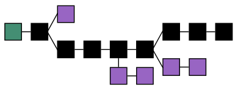

Blockchain
Een blockchain (Nederlands: blokketen) is een systeem voor het opslaan van data in een keten van datablokken, waarbij blokken niet gewijzigd kunnen worden. Blokken kunnen alleen aan het einde van de keten worden toegevoegd. Een blok bevat vaak meerdere transacties, die het resultaat zijn van uitgezonden transactieverzoeken/-opdrachten. Voor de actuele status van een gegeven in een blok moeten alle volgende blokken in aanmerking worden genomen, omdat die wijzigingen kunnen bevatten, voor zover die naar hun aard mogelijk zijn.
De data kunnen bijvoorbeeld overschrijvingen zijn van cryptogeld (en daarmee, zolang nog niet uitgegeven, bezittingen van de ontvangers), maar ze kunnen ook eigendomsaktes, afspraken, persoonlijke berichten of andere gegevens bevatten. Het bijzondere aan de blockchain is dat dit mogelijk is zonder centrale autoriteit waardoor het vervalsen van de vastgelegde gegevens niet mogelijk is door één centraal punt te corrumperen. Bekende implementaties van de blockchain zijn Bitcoin met cryptovaluta bitcoin (BTC), en Ethereum met cryptovaluta ether (ETH)
Voorbeeld van een blockchain
Het genereren van een nieuw blok, met gegevens, wordt mining (Engels voor delven) genoemd en de node die zich hiermee bezighoudt wordt miner genoemd. Binnen een besloten blockchain, waar vaak allerlei regels gelden, kan bijvoorbeeld één node als miner worden aangewezen en dat de rest van de nodes de gegevens alleen maar controleren. Ook kunnen de nodes bij toerbeurt als miner optreden. Bij een openbare blockchain, waar in principe iedereen een node kan opstarten en zich als miner kan aanbieden ligt dit gecompliceerder. Om steeds nieuwe blokken te laten genereren en daarmee de blockchain te doen blijven functioneren is een beloningssysteem nodig dat het interessant houdt voor deelnemers om hier hun rekenkracht voor ter beschikking te stellen. Bij openbare cryptovaluta wordt er vaak voor gekozen om transactiekosten die met de transacties van het betreffende blok gemoeid zijn toe te kennen aan de node die deze gegenereerd heeft. Tegelijkertijd kan de miner ook beloond worden door voor elk gevonden blok een vaste hoeveelheid van de cryptovaluta aan deze toe te kennen. Op deze manier wordt de hoeveelheid van de betreffende valuta groter en is het voor de eigenaar van een node financieel interessant om zich hiermee bezig te houden. Hier doet zich echter een probleem voor omdat dan vele spelers als miner zullen willen optreden en het lastig wordt om te bepalen welke van de vele gegenereerde blokken nu als volgende gekozen moet worden. Om dit op te lossen zijn verschillende consensusvarianten ontwikkeld.
{% endblock %}